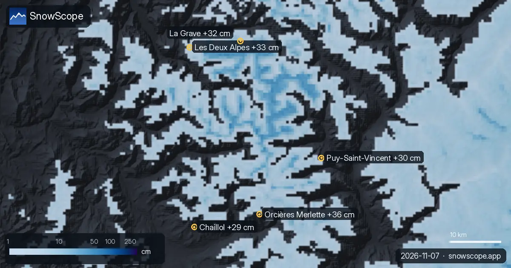

Prévisions neige dans les Alpes : jusqu'à 36 cm à Orcières Merlette d'ici le 10 novembre
D'ici le 10 novembre, notre prévision donne 36 cm à Orcières Merlette, 33 cm à Les Deux Alpes et 32 cm à La Grave. Les chiffres des stations de ski sont des estimations du modèle pour le haut du domaine ; ceux des stations de mesure sont mesurés en un point, à la date indiquée.
Consultez les prévisions neige en temps réel pour Orcières Merlette sur l'application SnowScopeHauteurs de neige, alertes poudreuse et carte 3D, gratuitement.
Ce qui arrive
D'ici le 10 novembre, notre prévision donne 30 cm à Puy-Saint-Vincent et 29 cm à Chaillol.
La surface enneigée est passée de 37 950 km² le 5 novembre à 32 120 km² aujourd'hui, et notre prévision donne 37 470 km² le 10 novembre.
| Station | Hauteur de neige | Neige fraîche, 72 h | Attendu, jours suivants | Sommet |
|---|---|---|---|---|
| Orcières Merlette | 13 cm | 16 cm | 36 cm | 2 731 m |
| Les Deux Alpes | 46 cm | 15 cm | 33 cm | 3 511 m |
| La Grave | 50 cm | 20 cm | 32 cm | 3 543 m |
| Puy-Saint-Vincent | 7 cm | 14 cm | 30 cm | 2 664 m |
| Chaillol | 5 cm | 15 cm | 29 cm | 1 929 m |
Altitude, pentes et limite pluie-neige
À Orcières Merlette, l'isotherme 0 °C monte entre 2 900 m et 3 160 m le 10 novembre, au-dessus du sommet de la station (2 731 m) : pluie ou neige mouillée possibles sur toutes les pentes ce jour-là.
À Les Deux Alpes, l'isotherme 0 °C monte entre 3 020 m et 3 180 m le 10 novembre : le bas du domaine peut recevoir de la neige mouillée, le haut reste bien hivernal.
À La Grave, l'isotherme 0 °C monte entre 2 680 m et 3 210 m le 8 novembre : le bas du domaine peut recevoir de la neige mouillée, le haut reste bien hivernal.
L'altitude compte : à Orcières Merlette, notre modèle donne 6 cm au sommet (2 731 m), 2 cm à mi-pente (2 278 m) et 0 cm en bas (1 826 m).
Où est la neige aujourd'hui
Parmi ces stations, La Grave a le plus de neige sur le haut du domaine aujourd'hui, environ 50 cm ; suivent Les Deux Alpes 46 cm et Orcières Merlette 13 cm.
661 stations sur 1 178 dans les Alpes ont de la neige sur le haut du domaine aujourd'hui, et notre modèle compte 32 120 km² de surface enneigée.
Sécurité et risque d'avalanche
Le niveau de risque d'avalanche officiel pour le secteur de Orcières Merlette est aujourd'hui de 2 sur l'échelle à 5 niveaux (Météo-France BERA).
Les prévisions à quelques jours peuvent changer : regardez à nouveau la carte la veille du départ.
Conseils aux skieurs
- Les prévisions à quelques jours peuvent changer : regardez à nouveau la carte la veille du départ.
- Là où l'isotherme 0 °C passe au-dessus de la station, prévoyez une neige mouillée et skiez sur les remontées les plus hautes.
- La neige fraîche est la meilleure dans les premières heures : partez tôt, avant le soleil et la foule.
- Avant le hors-piste ou la randonnée, lisez le bulletin d'avalanche officiel (liens ci-dessous).
- Activez une alerte poudreuse dans l'app SnowScope pour savoir quand Orcières Merlette reçoit de la neige fraîche.
À propos de ces chiffres
Les hauteurs de neige des stations sont la neige la plus épaisse sur le haut du domaine, d'après le modèle de neige SnowScope (environ 1 km, calcul du 6 novembre) ; ce sont des estimations pour une zone, pas une mesure en un point. Les valeurs des stations de mesure sont mesurées à la date indiquée. Les prévisions peuvent changer. Consultez toujours le bulletin d'avalanche officiel avant le hors-piste.
Bulletins d'avalanche officiels: Météo-France BERA
Citer ce bulletin
Pour la recherche, l'enseignement ou la presse : chiffres et graphiques réutilisables librement sous CC BY 4.0 avec cette citation.
SnowScope (2026), Prévisions neige dans les Alpes : jusqu'à 36 cm à Orcières Merlette d'ici le 10 novembre, https://snowscope.app/blog/fr/2026/11/alps-snow-forecast-7-november-2026.html, consulté le 2026-11-07
SnowScope (Atlas Labs). (2026, November 7). Prévisions neige dans les Alpes : jusqu'à 36 cm à Orcières Merlette d'ici le 10 novembre. SnowScope snow reports. https://snowscope.app/blog/fr/2026/11/alps-snow-forecast-7-november-2026.html
BibTeX
@misc{snowscope2026alpssnowforecast7novembe,
author = {{SnowScope (Atlas Labs)}},
title = {Prévisions neige dans les Alpes : jusqu'à 36 cm à Orcières Merlette d'ici le 10 novembre},
year = {2026},
month = nov,
howpublished = {\url{https://snowscope.app/blog/fr/2026/11/alps-snow-forecast-7-november-2026.html}},
note = {Published 2026-11-07 13:36 UTC; accessed 2026-11-07}
}· CC BY 4.0 · Méthodes, données et outils →
Orcières Merlette : neige et température selon l'altitude, cet hiver vs l'hiver dernier (outils) →